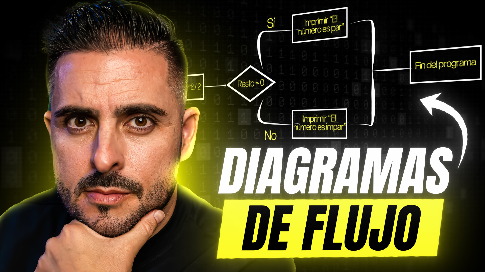

El lenguaje natural es el conjunto de idiomas que utilizamos los humanos para comunicarnos. A diferencia de los lenguajes de programación, que son diseñados específicamente para que las computadoras los entiendan, el lenguaje natural es ambiguo, variado y está lleno de expresiones coloquiales.
Seguir leyendo

Todo lo que hacemos en el mundo digital, desde enviar un mensaje de texto hasta ver un video en alta definición, depende de dos elementos esenciales: los bits y los bytes. Son los cimientos sobre los que se construye la tecnología moderna, pero muchas personas no conocen realmente su importancia. En este artículo, exploraremos qué son, cómo funcionan y por qué son fundamentales para el desarrollo y la programación.
Seguir leyendo

En el dinámico mundo del desarrollo web, el rol de desarrollador Full Stack ha emergido como una carrera codiciada, ofreciendo la promesa de dominar tanto el frontend como el backend. Para los perfiles junior, esta trayectoria puede parecer a la vez emocionante y desalentadora, dada la amplia gama de habilidades y tecnologías que deben aprenderse. Este artículo explora el camino hacia el desarrollo Full Stack para perfiles junior, brindando insights sobre cómo navegar estos desafíos y capitalizar las oportunidades en este campo.
Seguir leyendo

Un *algoritmo* es un conjunto de instrucciones ordenadas y definidas para resolver un problema o realizar una tarea. Es como una receta de cocina: tienes ingredientes (datos de entrada), sigues una serie de pasos (proceso) y obtienes un resultado (salida).
Seguir leyendo

En el vertiginoso mundo del desarrollo web y el marketing digital, emerge una figura revolucionaria: el desarrollador Full Stack Marketer. Este híbrido entre desarrollador y especialista en marketing representa una evolución natural en la intersección de la tecnología y el marketing, fusionando habilidades técnicas con estrategias de mercado para impulsar proyectos digitales al éxito. Este artículo explora el concepto del desarrollador Full Stack Marketer, destacando cómo su perfil único está redefiniendo las estrategias digitales y abriendo nuevas vías para la innovación en el marketing y el desarrollo web.
Seguir leyendo

Un *diagrama de flujo* es una representación visual de un proceso mediante símbolos y flechas que indican el flujo y el orden de ejecución. En pocas palabras, es un mapa que muestra los pasos a seguir para resolver un problema o completar una tarea.
Seguir leyendo